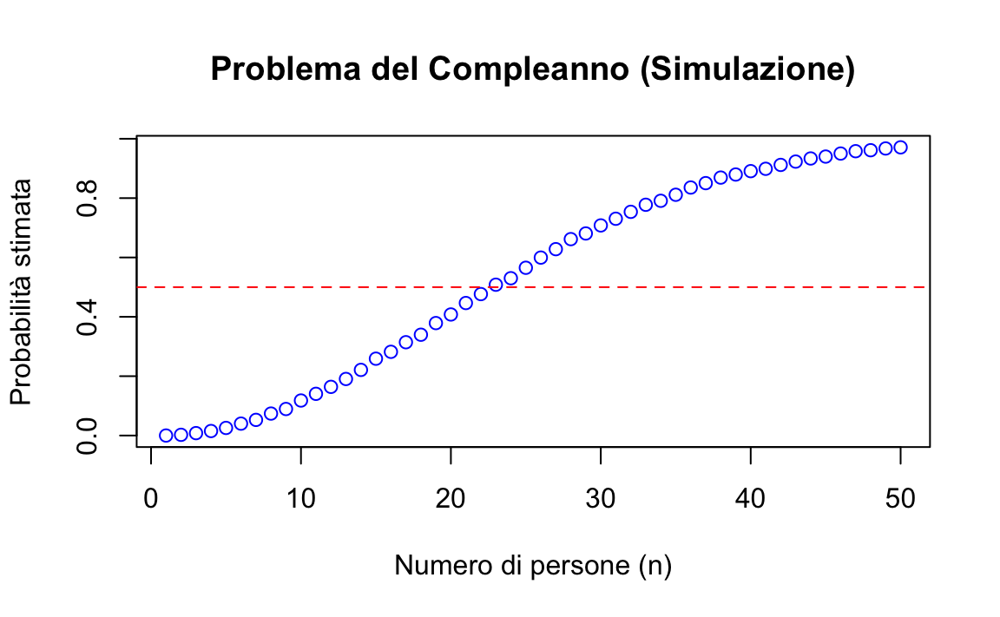

here::here("code", "_common.R") |>
source()
# Load packages
if (!requireNamespace("pacman")) install.packages("pacman")
pacman::p_load(readr, lubridate, reshape2)26 Fondamenti della probabilità
In questo capitolo imparerai a:
- capire la \(\sigma\)-algebra e gli assiomi di Kolmogorov;
- applicare le regole fondamentali della probabilità;
- utilizzare elementi del calcolo combinatorio.
Prerequisiti
- Leggere il capitolo Probability and counting di Introduction to Probability (Blitzstein & Hwang, 2019).
- Leggere il Capitolo 82.
Preparazione del Notebook
26.1 Introduzione
Nel Capitolo 25 abbiamo introdotto la teoria della misura e della probabilità su insiemi con un numero finito di elementi. Tuttavia, molti degli spazi matematici che incontriamo nelle applicazioni pratiche, come gli interi e la retta reale, non hanno un numero finito di elementi, ma piuttosto un numero numerabile infinito o addirittura non numerabile infinito di elementi. Sfortunatamente, estendere la teoria della misura e della probabilità a spazi più generali come questi non è sempre semplice.
Senza entrare nei dettagli, è stato dimostrato che la forma più generale della teoria della misura e della probabilità applicabile a qualsiasi spazio matematico è chiamata \(\sigma\)-algebra. In questo capitolo, forniremo un’introduzione intuitiva ai vincoli delle \(\sigma\)-algebre ed esamineremo alcune notevoli applicazioni. In particolare, introdurremo i concetti di variabile casuale, funzioni di massa di probabilità e funzioni di ripartizione.
Questi concetti sono fondamentali per comprendere come la probabilità e la misura possono essere utilizzate in contesti più complessi, permettendo di estendere le nostre analisi a insiemi infiniti e spazi continui, che sono comuni nelle applicazioni psicologiche.
26.2 \(\sigma\)-Algebra
Una \(\sigma\)-algebra è una struttura matematica che permette di definire in modo coerente quali sottoinsiemi di un insieme sono “misurabili”.
26.3 Definizione di \(\sigma\)-Algebra
Una \(\sigma\)-algebra è una collezione di sottoinsiemi di uno spazio \(X\) che soddisfa le seguenti proprietà:
Chiusura rispetto al complemento: Se un sottoinsieme \(A\) appartiene alla \(\sigma\)-algebra \(\mathcal{F}\), allora anche il suo complemento \(A^c\) appartiene a \(\mathcal{F}\). Questo significa che se \(\mathcal{F}\) contiene un certo sottoinsieme, deve contenere anche tutti gli elementi che non sono in quel sottoinsieme.
Chiusura rispetto alle unioni numerabili: Se una sequenza numerabile di sottoinsiemi \(A_1, A_2, A_3, \ldots\) appartiene alla \(\sigma\)-algebra \(\mathcal{F}\), allora anche l’unione di tutti questi sottoinsiemi appartiene a \(\mathcal{F}\). Questo implica che se \(\mathcal{F}\) contiene una serie di sottoinsiemi, deve contenere anche il loro insieme unito.
Inclusione dello spazio campionario: Lo spazio campionario \(X\) stesso deve appartenere alla \(\sigma\)-algebra \(\mathcal{F}\). In altre parole, l’intero insieme \(X\) è considerato un sottoinsieme misurabile.
La chiusura in questo contesto significa che la collezione \(\mathcal{F}\) è stabile rispetto a determinate operazioni insiemistiche. In particolare, se si applicano le operazioni di complemento o di unione numerabile a elementi della \(\sigma\)-algebra, i risultati di queste operazioni rimarranno all’interno della stessa \(\sigma\)-algebra. Questo garantisce che la \(\sigma\)-algebra non “perda” elementi a causa di queste operazioni, mantenendo così la coerenza e la completezza della collezione di sottoinsiemi.
26.3.1 Spazio Misurabile
Un insieme dotato di una \(\sigma\)-algebra, \((X, \mathcal{X})\), è detto spazio misurabile. Gli elementi di una \(\sigma\)-algebra sono noti come sottoinsiemi misurabili, mentre i sottoinsiemi non appartenenti alla \(\sigma\)-algebra sono detti non misurabili. La distinzione tra sottoinsiemi misurabili e non misurabili è cruciale per evitare comportamenti anomali e controintuitivi nella teoria della misura e della probabilità.
26.4 Gli Assiomi di Kolmogorov
Una volta definita una \(\sigma\)-algebra, è possibile introdurre la probabilità come una misura definita su questa collezione di sottoinsiemi. Gli assiomi di Kolmogorov stabiliscono le proprietà fondamentali che ogni funzione di probabilità deve soddisfare:
-
Non negatività: Per qualsiasi evento \(A\) nello spazio campionario \(\Omega\), la probabilità di \(A\) è non negativa.
\[ P(A) \geq 0. \]
-
Normalizzazione: La probabilità dell’intero spazio campionario \(\Omega\) è 1.
\[ P(\Omega) = 1. \]
-
Additività numerabile: Per qualsiasi sequenza di eventi mutuamente esclusivi \({A_i}_{i=1}^\infty \subset \mathcal{F}\) (cioè \(A_i \cap A_j = \varnothing\) per \(i \neq j\)), la probabilità della loro unione è la somma delle loro probabilità.
\[ P\left(\bigcup_{i=1}^{\infty} A_i\right) = \sum_{i=1}^{\infty} P(A_i). \]
26.4.1 Connessione tra \(\sigma\)-Algebra e Probabilità
Gli assiomi di Kolmogorov richiedono una \(\sigma\)-algebra \(\mathcal{F}\) come base per definire una misura di probabilità \(P\). La \(\sigma\)-algebra delimita l’insieme di sottoinsiemi dello spazio \(X\) per i quali la probabilità è ben definita.
- Non negatività La misura di probabilità assegna un valore non negativo a ogni evento in \(\mathcal{F}\).
- Normalizzazione garantisce che \(P(\Omega) = 1\), garantendo coerenza nella distribuzione della probabilità.
- Additività numerabile: La chiusura della \(\sigma\)-algebra rispetto alle unioni numerabili consente di applicare l’additività anche a collezioni infinite di eventi.
In sintesi, gli assiomi di Kolmogorov richiedono una \(\sigma\)-algebra come struttura all’interno della quale queste proprietà valgono. La \(\sigma\)-algebra è quindi la collezione di eventi per i quali la misura di probabilità è ben definita e coerente con gli assiomi di Kolmogorov.
26.4.1.1 Esempio di \(\sigma\)-Algebra
Consideriamo lo spazio campionario \(\Omega = {1, 2, 3}\). Una possibile \(\sigma\)-algebra su \(\Omega\) è:
\(\mathcal{F}\) = {\(\varnothing\),{1},{2,3}, {1, 2, 3}}.
Questa \(\sigma\)-algebra soddisfa tutte le proprietà richieste:
- Lo spazio campionario \(\Omega\) e l’insieme vuoto \(\varnothing\) appartengono a \(\mathcal{F}\).
- Il complemento di ogni sottoinsieme in \(\mathcal{F}\) appartiene ancora a \(\mathcal{F}\).
- L’unione di qualsiasi collezione di sottoinsiemi in \(\mathcal{F}\) appartiene a \(\mathcal{F}\).
In conclusione, la \(\sigma\)-algebra è un concetto essenziale nella teoria della probabilità, poiché delimita quali eventi possono essere misurati e assegnati una probabilità. Attraverso gli assiomi di Kolmogorov, questa struttura consente di costruire un sistema probabilistico coerente, garantendo che la probabilità sia definita in modo rigoroso e che operazioni come complemento, unione e intersezione numerabili siano sempre ben poste.
26.5 Probabilità
Una volta definiti gli assiomi di Kolmogorov, è possibile introdurre formalmente il concetto di probabilità.
La probabilità di un evento è una misura numerica che quantifica il grado di fiducia nel verificarsi di tale evento, in accordo con gli assiomi di Kolmogorov. Più precisamente:
- Se \(P(A) = 0\), l’evento \(A\) è impossibile.
- Se \(P(A) = 1\), l’evento \(A\) è certo.
Per indicare la probabilità che un evento \(A\) non si verifichi, si usa la notazione \(P(A^c)\), dove:
\[ P(A^c) = 1 - P(A). \]
26.5.1 Proprietà Derivate dagli Assiomi di Kolmogorov
Gli assiomi di Kolmogorov implicano alcune proprietà fondamentali, tra cui:
- \(P(\varnothing) = 0\) (la probabilità dell’evento impossibile è nulla),
- \(0 \leq P(A) \leq 1\) (la probabilità è sempre compresa tra 0 e 1),
- \(P(A^c) = 1 - P(A)\) (probabilità del complemento),
- Se \(A \subset B\), allora \(P(A) \leq P(B)\) (monotonia),
- Se \(A \cap B = \varnothing\), allora \(P(A \cup B) = P(A) + P(B)\) (additività per eventi incompatibili).
26.6 Regola della Somma
La regola della somma permette di calcolare la probabilità dell’unione di due eventi \(A\) e \(B\), cioè la probabilità che si verifichi \(A\) oppure \(B\). La formula dipende dal fatto che i due eventi siano incompatibili (mutuamente esclusivi) o meno.
26.6.1 Caso 1: Eventi incompatibili
Due eventi \(A\) e \(B\) sono detti incompatibili o mutuamente esclusivi se non possono verificarsi contemporaneamente. In altre parole, la probabilità della loro intersezione è nulla:
\[ P(A \cap B) = 0. \]
In questo caso, la probabilità dell’unione di \(A\) e \(B\) si calcola semplicemente sommando le probabilità individuali:
\[ P(A \text{ oppure } B) = P(A) + P(B). \]
26.6.1.1 Rappresentazione grafica
Nei diagrammi, gli eventi incompatibili sono rappresentati come aree che non si sovrappongono. La probabilità dell’unione corrisponde alla somma delle aree associate ai due eventi.
26.6.1.2 Esempio: Negazione di un evento
Un esempio classico di eventi incompatibili si ha quando \(B\) è il complemento di \(A\), ovvero \(B = A^c\). Poiché \(A\) oppure \(A^c\) rappresenta l’intero spazio campionario, la loro somma deve essere uguale a 1:
\[ P(A) + P(A^c) = 1. \]
Da questa relazione segue che:
\[ P(A^c) = 1 - P(A). \]
26.6.2 Caso 2: Eventi non incompatibili
Quando i due eventi \(A\) e \(B\) possono verificarsi contemporaneamente, si deve tener conto della probabilità della loro intersezione \(P(A \cap B)\). In questo caso, la regola della somma diventa:
\[ P(A \text{ oppure } B) = P(A) + P(B) - P(A \cap B). \]
26.6.2.1 Perché sottrarre \(P(A \cap B)\)?
Il termine \(P(A \cap B)\) rappresenta la probabilità che entrambi gli eventi si verifichino. Poiché questa probabilità è già inclusa in \(P(A)\) e in \(P(B)\), sottrarla evita di conteggiarla due volte.
26.6.2.2 Rappresentazione grafica
In un diagramma, gli eventi non incompatibili sono rappresentati da aree che si sovrappongono. La probabilità dell’unione corrisponde alla somma delle aree associate ai due eventi, meno l’area della sovrapposizione.
26.7 Legge della Probabilità Totale
La legge della probabilità totale consente di calcolare la probabilità di un evento \(A\) suddividendo lo spazio campionario in sottoinsiemi mutuamente esclusivi e completi, detti partizioni. Questo metodo è utile per decomporre un problema complesso in elementi più semplici.
26.7.1 Caso base: Partizione con due eventi
Se gli eventi \(B\) e \(B^c\) formano una partizione dello spazio campionario (ossia sono mutuamente esclusivi e la loro unione copre l’intero spazio), allora si può scrivere:
\[ P(A) = P(A \cap B) + P(A \cap B^c). \]
In altre parole, la probabilità di \(A\) è data dalla somma delle probabilità delle sue intersezioni con \(B\) e con il complemento di \(B\).
26.7.2 Estensione a più eventi
Se lo spazio campionario è suddiviso in \(n\) sottoinsiemi \(B_1, B_2, \dots, B_n\), tali che:
- Gli eventi \(B_1, B_2, \dots, B_n\) sono mutuamente esclusivi (\(B_i \cap B_j = \varnothing\) per \(i \neq j\)).
- La loro unione copre l’intero spazio campionario (\(\bigcup_{i=1}^n B_i = \Omega\)),
allora la probabilità di \(A\) si calcola come:
\[ P(A) = P(A \cap B_1) + P(A \cap B_2) + \dots + P(A \cap B_n). \]
26.7.3 Applicazioni
Questa legge è utile nei casi in cui un problema complesso può essere scomposto in diversi scenari o categorie (\(B_1, B_2, \dots, B_n\)). In pratica, permette di calcolare \(P(A)\) sommando le probabilità di \(A\) all’interno di ciascuna categoria, tenendo conto delle rispettive probabilità.
26.7.4 Esempio
Immagina che una scuola abbia due corsi, \(B\) e \(B^c\), e che un certo evento \(A\) (ad esempio, un esame superato) possa avvenire sia tra gli studenti del corso \(B\) che tra quelli di \(B^c\). Per calcolare la probabilità totale che \(A\) si verifichi, possiamo considerare separatamente i due gruppi:
\[ P(A) = P(A \cap B) + P(A \cap B^c). \]
In generale, la legge della probabilità totale aiuta a gestire problemi complessi e ad assicurare che ogni contributo venga considerato una sola volta, evitando duplicazioni o omissioni.
26.8 Probabilità, Calcolo Combinatorio e Simulazioni
Molti problemi di probabilità scolastici si basano sul calcolo combinatorio per determinare la probabilità di un evento. La struttura generale di questi problemi consiste nel:
- Definire gli eventi di successo: identificare tutte le configurazioni compatibili con l’evento di interesse.
- Contare le possibilità: calcolare il numero di eventi di successo e rapportarlo al numero totale di eventi nello spazio campionario.
Ad esempio, supponiamo di avere una scatola con 10 palline numerate da 1 a 10 e di voler calcolare la probabilità di estrarre una pallina con un numero pari:
- Eventi di successo: {2, 4, 6, 8, 10} (5 casi).
- Eventi totali: {1, 2, 3, 4, 5, 6, 7, 8, 9, 10} (10 casi).
La probabilità è quindi:
\[ P(\text{numero pari}) = \frac{\text{numero di eventi di successo}}{\text{numero totale di eventi}} = \frac{5}{10} = 0.5. \]
Per problemi più complessi, come il calcolo della probabilità di ottenere una determinata combinazione di carte o di formare gruppi specifici da una popolazione, utilizziamo tecniche combinatorie più avanzate, come permutazioni e combinazioni.
26.8.1 Gli Errori dei Grandi Matematici
La storia della teoria della probabilità è ricca di esempi che mostrano quanto questi problemi possano essere controintuitivi, persino per i grandi matematici. Uno di questi riguarda Jakob Bernoulli, pioniere della probabilità, nel suo libro Ars Conjectandi (1713). Un problema che affrontò riguardava il calcolo della probabilità di ottenere almeno una testa in 8 lanci di una moneta equa.
Per risolvere il problema, è utile considerare la probabilità complementare, ovvero quella di non ottenere alcuna testa (solo croci), e poi sottrarla da 1:
-
Calcolo della probabilità complementare: La probabilità di ottenere solo croci in un lancio è \(\frac{1}{2}\). In 8 lanci consecutivi, questa diventa:
\[ P(\text{solo croci}) = \left(\frac{1}{2}\right)^8 = \frac{1}{256}. \]
Calcolo della probabilità di almeno una testa: \[ P(\text{almeno una testa}) = 1 - P(\text{solo croci}) = 1 - \frac{1}{256} = \frac{255}{256}. \]
Tuttavia, Bernoulli commise un errore nel conteggio combinatorio, sottostimando la probabilità corretta. Questo errore fu poi corretto da altri matematici, come suo nipote Daniel Bernoulli, che affinò l’uso del calcolo combinatorio.
26.8.2 Simulazioni Monte Carlo e Problemi Probabilistici
Uno degli aspetti più impegnativi della probabilità è che molti problemi non si prestano a soluzioni immediate o intuitive. Per affrontarli, si possono adottare due approcci principali. Il primo consiste nell’applicare i teoremi della teoria della probabilità, un metodo rigoroso ma spesso controintuitivo. Il secondo approccio è quello della simulazione Monte Carlo, che permette di ottenere una soluzione approssimata, ma molto vicina al valore reale, seguendo una procedura più accessibile e intuitiva. Questo metodo prende il nome dal famoso Casinò di Monte Carlo a Monaco, anche se può essere semplicemente definito come “metodo di simulazione.”
La simulazione Monte Carlo appartiene a una classe generale di metodi stocastici, che si contrappongono ai metodi deterministici. Questi metodi consentono di risolvere approssimativamente problemi analitici attraverso la generazione casuale delle quantità di interesse. Tra le tecniche comunemente utilizzate troviamo il campionamento con reinserimento, in cui la stessa unità può essere selezionata più volte, e il campionamento senza reinserimento, dove ogni unità può essere selezionata una sola volta. Questi strumenti rappresentano un mezzo potente e pratico per affrontare problemi complessi.
26.8.2.1 Il Problema dei Complenni
Un esempio classico di applicazione del metodo Monte Carlo è il calcolo delle probabilità relative a vari eventi definiti attraverso il modello dell’urna. Tra questi, abbiamo il celebre problema dei compleanni.
Il problema dei compleanni esplora la probabilità che, in un gruppo di \(n\) persone, almeno due persone condividano la stessa data di nascita. Supponendo che i compleanni siano distribuiti uniformemente su 365 giorni (ignorando anni bisestili), il problema sorprende molte persone per il fatto che già con 23 persone la probabilità di una coincidenza è superiore al 50%.
26.8.2.1.1 Soluzione analitica
- Probabilità complementari
Il problema può essere visto in due modi complementari:
- Caso 1: Tutti i compleanni sono diversi (cioè nessuna persona condivide il compleanno con un’altra).
- Caso 2: Almeno due persone condividono lo stesso compleanno.
Poiché questi due casi sono mutuamente esclusivi e coprono tutte le possibilità, la somma delle loro probabilità deve essere 1:
\[ P(\text{almeno un compleanno in comune}) = 1 - P(\text{nessun compleanno in comune}). \]
Quindi, per calcolare la probabilità che almeno due persone abbiano lo stesso compleanno, calcoliamo prima la probabilità del caso opposto (nessun compleanno in comune) e poi sottraiamo questo valore da 1.
- Probabilità che tutti i compleanni siano diversi
Per calcolare \(P(\text{nessun compleanno in comune})\), seguiamo questo ragionamento:
- La prima persona può scegliere liberamente un giorno del calendario: ci sono 365 possibilità.
- La seconda persona deve avere un compleanno diverso dalla prima: ci sono 364 giorni disponibili.
- La terza persona deve avere un compleanno diverso dai primi due: ci sono 363 giorni disponibili.
Questo continua fino alla \(n\)-esima persona, che ha \(365 - n + 1\) giorni disponibili.
La probabilità che tutti i compleanni siano diversi si ottiene moltiplicando queste probabilità individuali, e poi normalizzando rispetto a tutte le possibili scelte di compleanno (\(365^n\)):
\[ P(\text{nessun compleanno in comune}) = \frac{365}{365} \cdot \frac{364}{365} \cdot \frac{363}{365} \cdot \ldots \cdot \frac{365-n+1}{365}. \]
Questo prodotto può essere scritto in forma compatta usando il fattoriale:
\[ P(\text{nessun compleanno in comune}) = \frac{365!}{(365-n)! \cdot 365^n}. \]
- Probabilità di almeno un compleanno in comune
Ora possiamo calcolare la probabilità che almeno due persone abbiano lo stesso compleanno come il complemento:
\[ P(\text{almeno un compleanno in comune}) = 1 - P(\text{nessun compleanno in comune}). \]
26.8.2.1.2 Soluzione con simulazione in R
Per risolvere il problema tramite simulazione, possiamo generare gruppi casuali di \(n\) persone, assegnando loro un compleanno casuale tra 1 e 365. Per ogni gruppo, verifichiamo se almeno due persone condividono lo stesso compleanno.
Ecco il codice R:
# Numero di simulazioni
num_simulazioni <- 10000
# Funzione per simulare il problema del compleanno
simula_compleanno <- function(n) {
# Conta il numero di successi (almeno un compleanno in comune)
successi <- 0
# Loop per il numero di simulazioni
for (i in 1:num_simulazioni) {
# Genera n compleanni casuali
compleanni <- sample(1:365, n, replace = TRUE)
# Verifica se ci sono duplicati
if (any(duplicated(compleanni))) {
successi <- successi + 1
}
}
# Calcola la probabilità stimata
return(successi / num_simulazioni)
}# Proviamo con diversi valori di n
set.seed(123) # Fissiamo il seme per riproducibilità
risultati <- sapply(1:50, simula_compleanno)
# Plot dei risultati
plot(
1:50, risultati, type = "b", col = "blue",
xlab = "Numero di persone (n)",
ylab = "Probabilità stimata",
main = "Problema del Compleanno (Simulazione)"
)
abline(h = 0.5, col = "red", lty = 2) # Linea di riferimento al 50%
- Simulazioni: Per ogni gruppo di \(n\), si eseguono 10.000 simulazioni, in cui si generano \(n\) compleanni casuali tra 1 e 365.
-
Duplicati: La funzione
duplicated()verifica se ci sono compleanni ripetuti. - Calcolo della probabilità: La proporzione di simulazioni in cui si verifica almeno un compleanno condiviso rappresenta la probabilità stimata.
- Visualizzazione: Si tracciano le probabilità per diversi valori di \(n\), evidenziando il punto in cui la probabilità supera il 50%.
26.8.2.1.3 Risultati attesi
- Con circa 23 persone, la probabilità stimata sarà superiore a 0.5.
- Il grafico mostra una curva crescente con un rapido aumento della probabilità per \(n\) piccoli e un asintoto vicino a 1 per \(n\) grandi.
Questo approccio permette di comprendere intuitivamente il problema e di verificare i risultati teorici con la simulazione.
26.8.2.1.4 Assunzioni
Il problema dei compleanni evidenzia non solo l’efficacia dell’approccio simulativo nel semplificare la soluzione rispetto all’analisi formale, ma anche l’importanza delle assunzioni che entrambi i metodi condividono. In questo caso, l’assunzione è che la probabilità di nascita sia uniformemente distribuita nei 365 giorni dell’anno — un’ipotesi semplificativa che non rispecchia la realtà.
Questo esempio sottolinea un principio fondamentale dei modelli probabilistici (e scientifici in generale): ogni modello si basa su un insieme di ipotesi che ne delimitano la validità e l’applicabilità. Valutare criticamente la plausibilità di tali ipotesi è dunque essenziale per garantire che il modello fornisca una rappresentazione coerente e utile del fenomeno in studio.
26.9 Riflessioni Conlusive
Dalla rigorosa applicazione del calcolo combinatorio agli approcci più intuitivi delle simulazioni Monte Carlo, la probabilità fornisce strumenti fondamentali per risolvere problemi complessi. Comprendere le probabilità ci consente di prendere decisioni informate in situazioni di incertezza e di formulare previsioni affidabili. Una solida conoscenza delle basi della probabilità ci permette di affrontare una vasta gamma di problemi e di fare scelte ponderate basate sulla probabilità dei vari esiti possibili. Tuttavia, è importante ricordare che i modelli probabilistici sono solo approssimazioni della realtà e possono essere influenzati da semplificazioni o dalle limitazioni dei dati disponibili. Pertanto, è fondamentale interpretare i risultati con cautela e avere piena consapevolezza delle assunzioni che sottendono le analisi.
Informazioni sull’Ambiente di Sviluppo
sessionInfo()
#> R version 4.4.2 (2024-10-31)
#> Platform: aarch64-apple-darwin20
#> Running under: macOS Sequoia 15.2
#>
#> Matrix products: default
#> BLAS: /Library/Frameworks/R.framework/Versions/4.4-arm64/Resources/lib/libRblas.0.dylib
#> LAPACK: /Library/Frameworks/R.framework/Versions/4.4-arm64/Resources/lib/libRlapack.dylib; LAPACK version 3.12.0
#>
#> locale:
#> [1] C/UTF-8/C/C/C/C
#>
#> time zone: US/Pacific
#> tzcode source: internal
#>
#> attached base packages:
#> [1] stats graphics grDevices utils datasets methods base
#>
#> other attached packages:
#> [1] reshape2_1.4.4 ggokabeito_0.1.0 see_0.9.0 gridExtra_2.3
#> [5] patchwork_1.3.0 bayesplot_1.11.1 psych_2.4.12 scales_1.3.0
#> [9] markdown_1.13 knitr_1.49 lubridate_1.9.4 forcats_1.0.0
#> [13] stringr_1.5.1 dplyr_1.1.4 purrr_1.0.2 readr_2.1.5
#> [17] tidyr_1.3.1 tibble_3.2.1 ggplot2_3.5.1 tidyverse_2.0.0
#> [21] rio_1.2.3 here_1.0.1
#>
#> loaded via a namespace (and not attached):
#> [1] generics_0.1.3 stringi_1.8.4 lattice_0.22-6 hms_1.1.3
#> [5] digest_0.6.37 magrittr_2.0.3 evaluate_1.0.1 grid_4.4.2
#> [9] timechange_0.3.0 fastmap_1.2.0 plyr_1.8.9 rprojroot_2.0.4
#> [13] jsonlite_1.8.9 mnormt_2.1.1 cli_3.6.3 rlang_1.1.4
#> [17] munsell_0.5.1 withr_3.0.2 yaml_2.3.10 tools_4.4.2
#> [21] parallel_4.4.2 tzdb_0.4.0 colorspace_2.1-1 pacman_0.5.1
#> [25] vctrs_0.6.5 R6_2.5.1 lifecycle_1.0.4 htmlwidgets_1.6.4
#> [29] pkgconfig_2.0.3 pillar_1.10.1 gtable_0.3.6 Rcpp_1.0.13-1
#> [33] glue_1.8.0 xfun_0.50 tidyselect_1.2.1 farver_2.1.2
#> [37] htmltools_0.5.8.1 nlme_3.1-166 rmarkdown_2.29 compiler_4.4.2Bibliografia
Blitzstein, J. K., & Hwang, J. (2019). Introduction to probability. CRC Press.